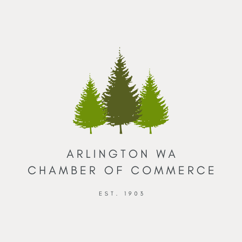

Arlington, WA Chamber of Commerce
Site purpose
This website will serve the purpose of guiding locals or tourists to trusted nearby businesses in Arlington, WA.
Available Domain:
arlingtonwachambercommerce.com
Target Audience
The target audience for this website consists to tourists that are visiting Arlington, WA or people that are new to town.
John Doe heard about the beautiful hikes around Arlington, Washington. However he needs help to find reliable and trustworthy businesses to buy supplies from.
The Johnson family is new to Arlington, Washington and they need to know the right businesses to go to in order to feel right at home.
This site can be a solution to the following scenarios.
- A family wants to go out to eat and they are not sure where to go in town.
- A newcomer needs to know what are some good banks to go to while they live in town.
- A mother needs to know what the best grocery stores in town are.
- A person that wants to work wants to see which companies are hiring.
- A hiker or biker wants to know the best stores to go to for hiking or biking supplies.
Colors and Typography
Arlingon, WA Chamber of Commerce
Arlingon, WA Chamber of Commerce
Arlingon, WA Chamber of Commerce
Arlingon, WA Chamber of Commerce